<section class="features">
  <div class="container features-container">
    <h2 class="features-title">Features</h2>
    <div class="features-box-text">
      <div class="div-text">
        <p class="features-heder-text">
          Built for fast and exciting mobile gameplay
        </p>
      </div>
      <div class="div-text">
        <p class="features-heder-text">
          The whole festival vibe is really well done
        </p>
      </div>
      <div class="div-text">
        <p class="features-heder-text">
          Colorful trucks and neon visuals create a lively experience
        </p>
      </div>
    </div>
    <div class="div-features-list">
      <div class="features-box-list">
        <h3 class="features-list">Multiple Food Trucks</h3>
        <p class="features-list-text">
          Each truck offers unique recipes and challenges.
        </p>
      </div>
      <div class="features-box-list">
        <h3 class="features-list">Fast-Paced Cooking Action</h3>
        <p class="features-list-text">
          If you can multitask like crazy, you might stand a chance in this
          game.
        </p>
      </div>
      <div class="features-box-list">
        <h3 class="features-list">Progressive Upgrade System</h3>
        <p class="features-list-text">
          You start with basically a food cart and work your way up to running
          multiple trucks - it's pretty satisfying to see the progression.
        </p>
      </div>
      <div class="features-box-list">
        <h3 class="features-list">Smooth Mobile Controls</h3>
        <p class="features-list-text">
          Simple interactions designed for quick gameplay flow.
        </p>
      </div>
    </div>
    <picture class="features-lines">
      <source
        media="(min-width: 1440px)"
        srcset="../img/features/lines-desktop.png"
      />

      
    </picture>
  </div>
</section>
